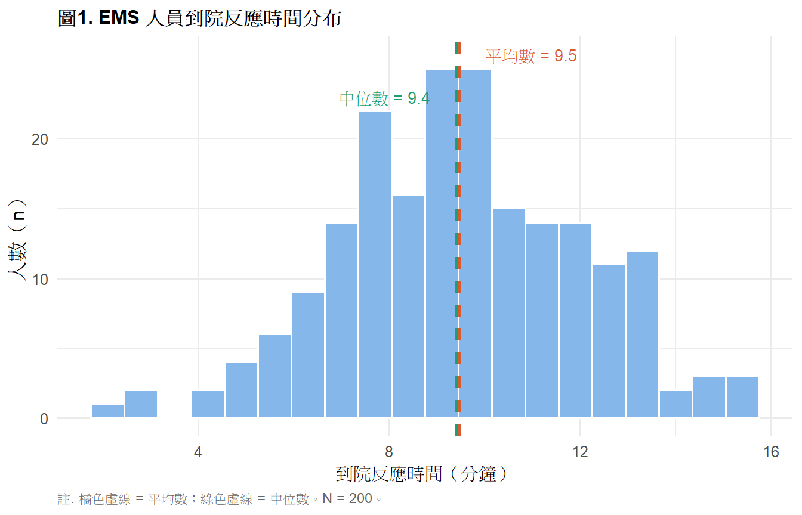
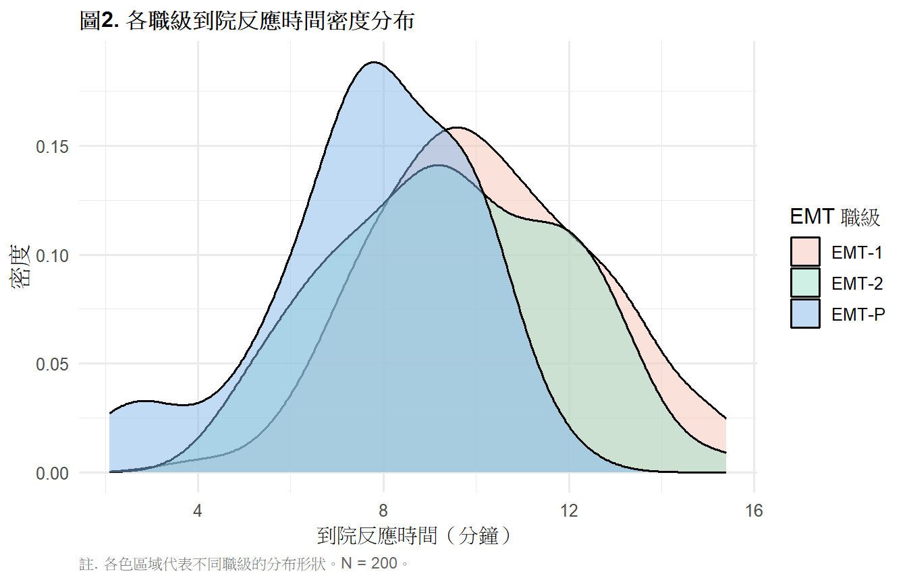
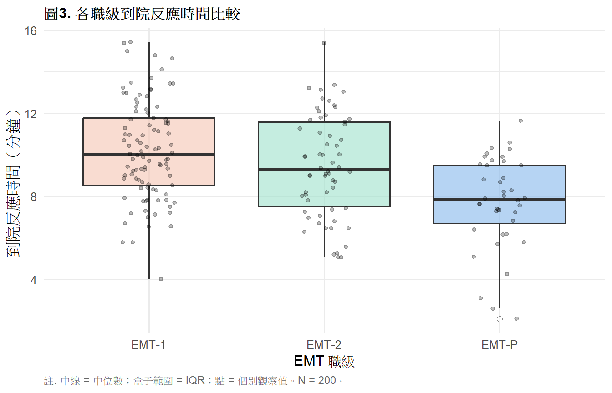
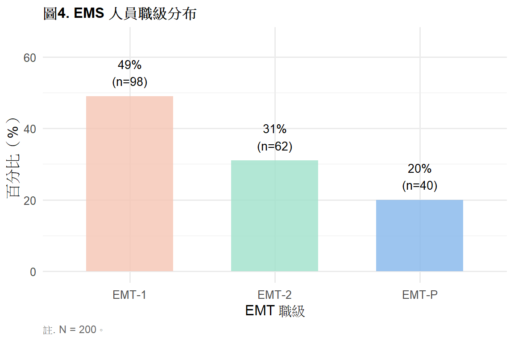
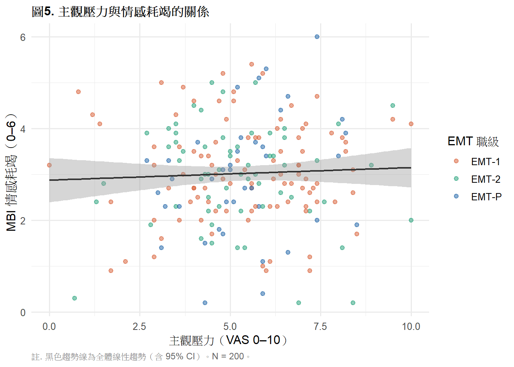

library(tidyverse)
library(gt)
library(ggplot2)
ems <- read.csv("data/ems_main.csv",
fileEncoding = "UTF-8",
stringsAsFactors = FALSE)
ems$gender <- factor(ems$gender,
levels = c("男", "女"))
ems$level <- factor(ems$level,
levels = c("EMT-1", "EMT-2", "EMT-P"))
ems$district <- factor(ems$district,
levels = c("北部", "中部", "南部", "東部"))
ems$shift <- factor(ems$shift,
levels = c("日班為主", "夜班為主", "輪班"))第3週：資料視覺化
ggplot2 圖層邏輯、選對圖表、APA 格式輸出
本週學習目標
- 理解 ggplot2 的圖層（layer）概念
- 根據變項類型選擇正確的圖表
- 製作符合 APA 格式的學術圖表
- 用視覺化輔助描述統計的詮釋
統計方法對照表（本週位置）
| X 自變項 | Y 依變項 | 適合圖表 |
|---|---|---|
| 無 | 連續 | 直方圖、密度圖、盒鬚圖 |
| 無 | 類別 | 長條圖 |
| 類別 | 連續 | 分組盒鬚圖、分組長條圖 |
| 連續 | 連續 | 散點圖、折線圖 |
重要
選錯圖表是最常見的錯誤：
- 連續變項的分布 → 直方圖（不是長條圖）
- 類別變項的分布 → 長條圖（不是直方圖）
- 兩個連續變項的關係 → 散點圖（不是折線圖）
一、統計理論
1.1 為什麼視覺化是統計的一部分？
Anscombe’s Quartet 是統計學裡最有名的例子：四組資料的平均數、標準差、相關係數幾乎完全相同，但畫出來的散點圖完全不同。
數字可能誤導你，但圖表不會。
描述統計的數字永遠要搭配視覺化：
- 平均數相同不代表分布相同
- p 值顯著不代表效果大
- 相關係數高不代表線性關係
1.2 ggplot2 的圖層概念
ggplot2 的邏輯是疊加圖層，像在畫紙上一層一層疊：
ggplot(資料, aes(映射關係)) ← 畫布 + 座標軸
+ geom_xxx() ← 幾何形狀（點、線、柱）
+ scale_xxx() ← 座標軸與顏色設定
+ labs() ← 標題與軸標籤
+ theme_xxx() ← 整體風格每一個 + 就是加一層。
1.3 aes() 的意義
aes() 是 aesthetic mapping——把資料的欄位「映射」到圖表的視覺元素：
| aes 參數 | 對應視覺元素 |
|---|---|
x = |
橫軸 |
y = |
縱軸 |
fill = |
填充顏色 |
color = |
邊框或點的顏色 |
shape = |
點的形狀 |
size = |
點或線的大小 |
提示
規則：
- 顏色要根據資料變動 → 放在
aes()裡面 - 固定的顏色 → 放在
aes()外面
# 顏色根據職級變動（aes 裡）
aes(x = response_time, fill = level)
# 所有柱子同一個藍色（aes 外）
geom_histogram(fill = "#85B7EB")1.4 選對圖表的決策流程
要呈現什麼？
├── 單一變項的分布
│ ├── 連續 → 直方圖 / 密度圖
│ └── 類別 → 長條圖
├── 兩個變項的關係
│ ├── 連續 × 連續 → 散點圖
│ ├── 類別 × 連續 → 分組盒鬚圖
│ └── 類別 × 類別 → 堆疊長條圖
└── 時間趨勢
└── 折線圖1.5 APA 圖表規範
重要
APA 第七版圖表規範重點：
- 圖表標題在圖表上方，用粗體，格式：「圖X. 說明」
- 說明（Note）在圖表下方，格式：「註. 說明文字。」
- 不使用 3D 效果
- 顏色應考慮色盲友善（避免純紅綠對比）
- 灰階列印時仍需能區分各組
二、R 實作
載入套件與資料
圖1. 直方圖：連續變項分布
ggplot(ems, aes(x = response_time)) +
geom_histogram(bins = 20,
fill = "#85B7EB",
color = "white") +
geom_vline(xintercept = mean(ems$response_time),
color = "#D85A30",
linetype = "dashed",
linewidth = 0.9) +
geom_vline(xintercept = median(ems$response_time),
color = "#1D9E75",
linetype = "dashed",
linewidth = 0.9) +
annotate("text",
x = mean(ems$response_time) + 1.5,
y = 26,
label = paste0("平均數 = ",
round(mean(ems$response_time), 1)),
color = "#D85A30", size = 3.5) +
annotate("text",
x = median(ems$response_time) - 1.5,
y = 23,
label = paste0("中位數 = ",
round(median(ems$response_time), 1)),
color = "#1D9E75", size = 3.5) +
labs(
title = "圖1. EMS 人員到院反應時間分布",
x = "到院反應時間（分鐘）",
y = "人數（n）",
caption = "註. 橘色虛線 = 平均數；綠色虛線 = 中位數。N = 200。"
) +
theme_minimal(base_size = 12) +
theme(
plot.title = element_text(face = "bold", size = 12),
plot.caption = element_text(hjust = 0, size = 9,
color = "gray40")
)
圖2. 密度圖：比較分組分布
ggplot(ems, aes(x = response_time, fill = level)) +
geom_density(alpha = 0.5) +
scale_fill_manual(
values = c("EMT-1" = "#F5C4B3",
"EMT-2" = "#9FE1CB",
"EMT-P" = "#85B7EB"),
name = "EMT 職級"
) +
labs(
title = "圖2. 各職級到院反應時間密度分布",
x = "到院反應時間（分鐘）",
y = "密度",
caption = "註. 各色區域代表不同職級的分布形狀。N = 200。"
) +
theme_minimal(base_size = 12) +
theme(
plot.title = element_text(face = "bold", size = 12),
plot.caption = element_text(hjust = 0, size = 9,
color = "gray40")
)
圖3. 盒鬚圖：分組比較
ggplot(ems, aes(x = level, y = response_time,
fill = level)) +
geom_boxplot(alpha = 0.6,
outlier.shape = 21,
outlier.fill = "white",
outlier.size = 2) +
geom_jitter(width = 0.15, alpha = 0.25, size = 1.2) +
scale_fill_manual(
values = c("EMT-1" = "#F5C4B3",
"EMT-2" = "#9FE1CB",
"EMT-P" = "#85B7EB")
) +
labs(
title = "圖3. 各職級到院反應時間比較",
x = "EMT 職級",
y = "到院反應時間（分鐘）",
caption = "註. 中線 = 中位數；盒子範圍 = IQR；點 = 個別觀察值。N = 200。"
) +
theme_minimal(base_size = 12) +
theme(
plot.title = element_text(face = "bold", size = 12),
legend.position = "none",
plot.caption = element_text(hjust = 0, size = 9,
color = "gray40")
)
圖4. 長條圖：類別變項分布
ems |>
count(level) |>
mutate(pct = round(n / sum(n) * 100, 1)) |>
ggplot(aes(x = level, y = pct, fill = level)) +
geom_col(alpha = 0.8, width = 0.6) +
geom_text(
aes(label = paste0(pct, "%\n(n=", n, ")")),
vjust = -0.4, size = 3.5
) +
scale_fill_manual(
values = c("EMT-1" = "#F5C4B3",
"EMT-2" = "#9FE1CB",
"EMT-P" = "#85B7EB")
) +
scale_y_continuous(limits = c(0, 65)) +
labs(
title = "圖4. EMS 人員職級分布",
x = "EMT 職級",
y = "百分比（%）",
caption = "註. N = 200。"
) +
theme_minimal(base_size = 12) +
theme(
plot.title = element_text(face = "bold", size = 12),
legend.position = "none",
plot.caption = element_text(hjust = 0, size = 9,
color = "gray40")
)
圖5. 散點圖：兩個連續變項的關係
ggplot(ems, aes(x = stress_vas, y = mbi_ee,
color = level)) +
geom_point(alpha = 0.5, size = 1.8) +
geom_smooth(method = "lm", se = TRUE,
color = "#333333", linewidth = 0.8,
aes(group = 1)) +
scale_color_manual(
values = c("EMT-1" = "#D85A30",
"EMT-2" = "#1D9E75",
"EMT-P" = "#185FA5"),
name = "EMT 職級"
) +
labs(
title = "圖5. 主觀壓力與情感耗竭的關係",
x = "主觀壓力（VAS 0–10）",
y = "MBI 情感耗竭（0–6）",
caption = "註. 黑色趨勢線為全體線性趨勢（含 95% CI）。N = 200。"
) +
theme_minimal(base_size = 12) +
theme(
plot.title = element_text(face = "bold", size = 12),
plot.caption = element_text(hjust = 0, size = 9,
color = "gray40")
)
表1. 各職級描述統計（配合圖3）
ems |>
group_by(level) |>
summarise(
n = n(),
Mean = round(mean(response_time), 2),
SD = round(sd(response_time), 2),
Median = round(median(response_time), 2),
Q1 = round(quantile(response_time, 0.25), 2),
Q3 = round(quantile(response_time, 0.75), 2),
.groups = "drop"
) |>
rename(職級 = level) |>
gt() |>
tab_header(
title = "表1. 各職級到院反應時間描述統計"
) |>
tab_spanner(
label = "集中趨勢",
columns = c(Mean, Median)
) |>
tab_spanner(
label = "四分位數",
columns = c(Q1, Q3)
) |>
tab_source_note(
source_note = "註. 單位：分鐘。Q1 = 第25百分位；Q3 = 第75百分位。"
) |>
cols_align(align = "center", columns = -職級) |>
cols_align(align = "left", columns = 職級) |>
tab_style(
style = cell_text(weight = "bold"),
locations = cells_column_labels()
) |>
tab_style(
style = cell_text(weight = "bold"),
locations = cells_column_spanners()
) |>
tab_options(
table.border.top.style = "hidden",
heading.border.bottom.style = "solid",
column_labels.border.top.style = "solid",
column_labels.border.bottom.style = "solid",
table.border.bottom.style = "solid",
table.font.size = px(13),
heading.title.font.size = px(14),
heading.align = "left"
)| 表1. 各職級到院反應時間描述統計 | ||||||
| 職級 | n |
集中趨勢
|
SD |
四分位數
|
||
|---|---|---|---|---|---|---|
| Mean | Median | Q1 | Q3 | |||
| EMT-1 | 98 | 10.21 | 10.00 | 2.35 | 8.53 | 11.78 |
| EMT-2 | 62 | 9.47 | 9.30 | 2.44 | 7.50 | 11.57 |
| EMT-P | 40 | 7.72 | 7.85 | 2.19 | 6.70 | 9.50 |
| 註. 單位：分鐘。Q1 = 第25百分位；Q3 = 第75百分位。 | ||||||
儲存高解析度圖表
# 建立 figures 資料夾
dir.create("figures", showWarnings = FALSE)
# 儲存圖表（投稿用 300 dpi）
ggsave("figures/fig3_boxplot.png",
width = 7, height = 4.5, dpi = 300)
ggsave("figures/fig3_boxplot.tiff",
width = 7, height = 4.5, dpi = 300,
compression = "lzw")三、結果報告範例（APA 格式）
引用圖表：
圖2 顯示 EMT-P 的反應時間分布（M = 7.8 分鐘）明顯左移， 與 EMT-1（M = 10.4 分鐘）的分布僅有部分重疊， 提示職級可能影響反應時間（詳見第 7 週 ANOVA）。
引用表格：
如表1 所示，三個職級的反應時間中位數依序為 EMT-1（9.4 分鐘）、EMT-2（8.1 分鐘）、EMT-P（6.9 分鐘）， 呈現明顯的梯度差異。
本週小作業
Q1 畫出 stress_vas 的直方圖，標示平均數與中位數虛線， 說明分布形狀（常態？偏態？），符合 APA 格式。
Q2 用盒鬚圖比較四個地區（district）的 monthly_cases， 並製作對應的 gt APA 格式描述統計表。
Q3 用長條圖呈現各班別（shift）的職業傷害（occ_injury）比例， 圖上標示各組百分比，符合 APA 格式。
Q4 用散點圖探索 sleep_hrs 與 mbi_ee 的關係， 加上線性趨勢線，依性別（gender）用不同顏色區分。
Q5 思考題： 圖2 的密度圖顯示 EMT-P 的反應時間分布 與 EMT-1 有重疊，這對「職級影響反應時間」這個推論有什麼影響？ 第 7 週的 ANOVA 會如何回答這個問題？